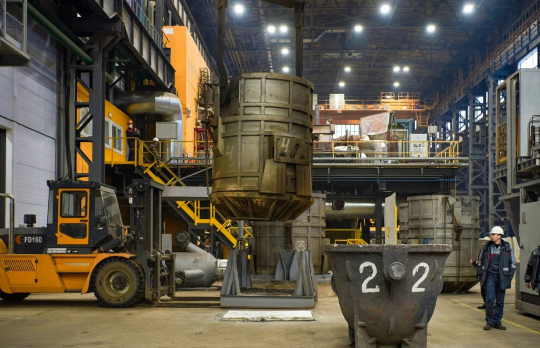
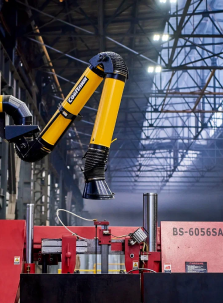
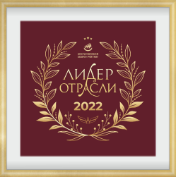

В 2019-2020 годах на АО «Металлургический завод «Петросталь» произведено техническое переоснащение существующего производства. В результате реализации этого проекта создан новый металлургический комплекс НПО «Лаборатория специальных сталей и сплавов» (цех 170), предназначенный для производства сортовых и кузнечных слитков открытой выплавки и слитков электрошлакового переплава из сталей и сплавов специального назначения, имеющих повышенные прочностные и пластические свойства при низких и высоких температурах, стойких к щелочам и кислотам, со специальными и регламентированными механическими свойствами.
В 2019-2020 годах на АО «Металлургический завод «Петросталь» произведено техническое переоснащение существующего производства. В результате реализации этого проекта создан новый металлургический комплекс НПО «Лаборатория специальных сталей и сплавов» (цех 170), предназначенный для производства сортовых и кузнечных слитков открытой выплавки и слитков электрошлакового переплава из сталей и сплавов специального назначения, имеющих повышенные прочностные и пластические свойства при низких и высоких температурах, стойких к щелочам и кислотам, со специальными и регламентированными механическими свойствами.
Слитки открытой дуговой выплавки и электрошлакового переплава подвергают контролю качества боковой поверхности и локальной зачистке дефектов Зачистка дефектов производится выплавкой (огнём) или обдиркой на подвесном обдирочно-шлифовальном станке На слитках ЭШП дополнительно производится удаление донной и, при необходимости, головной части
Предприятие полностью самостоятельно обеспечивается расходуемыми электродами для электрошлакового переплава из любых сталей и сплавов. Постоянное совершенствование технологии производства стали и проката, обновление и расширение состава оборудования, систематическое повышение квалификации рабочих и специалистов позволяет обеспечивать самые жесткие требования заказчиков к качеству продукции.
На сегодняшний день завод ежемесячно производит продукцию в объеме 1000 тонн из различных марок сталей и сплавов, из них 250 тонн с ЭШП переплавом. Одним из преимуществ ЛССС является возможность выпуска малотоннажных партий проката нужного профиля. В 2022 году ООО НПО «Лаборатория специальных сталей и сплавов» получила звание «Лидер отрасли 2022 г.», и заняло 1 место среди металлургических предприятий г. Санкт – Петербурга, 2 место среди металлургических предприятий Северо-Западного Федерального округа, уступив первое место «Северстали».
Ключевым потребителем слитков производства ООО «НПО Лаборатория специальных сталей и сплавов» является АО «Металлургический завод «Петросталь», который производит горячекатаный сортовой прокат из получаемых слитков.
В Политике ООО «НПО Лаборатория специальных сталей и сплавов» в области охраны труда, промышленной и экологической безопасности, принятой в феврале 2022 года, закреплены основные принципы, цели и задачи предприятия, установлен приоритет обеспечения жизни и здоровья работников, сохранности окружающей среды по отношению к результатам производственной деятельности. Политика предприятия заключается в следующем:
«Мы считаем, что безопасный труд, безаварийное производство, сохранность окружающей среды и рациональное использование природных ресурсов является основой успехов в бизнесе.
Наша цель - работа без происшествий:
Мы стремимся исключить любые происшествия, способные нанести вред здоровью людей, производству или окружающей среде.
Мы принимаем на себя обязательства:
Постоянные улучшения:
Все наши руководители ответственны за постоянные улучшения в области охраны труда, промышленной и экологической безопасности при осуществлении ими производственной деятельности.
Мы принимаем на себя обязательства:
Мы ожидаем от всех наших сотрудников:
К числу главных целей и задач ООО «НПО Лаборатория специальных сталей и сплавов» в области экологии отнесены:
Для решения поставленных задач ООО «НПО Лаборатория специальных сталей и сплавов» последовательно проводит комплекс мероприятий, в том числе: